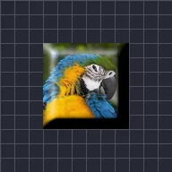

شطبة ناعمة

تمنح الأجزاء المعتمة من الطبقة شطبة ناعمة مستديرة مضاءة من جهة واحدة.
الإعدادات
| الإعداد | النوع | النطاق | الافتراضي |
|---|---|---|---|
| الحجم | رقم | من 0 إلى 300 | 20 |
| زاوية الإضاءة | زاوية | من -3600° إلى 3600° | 135° |
| العمق | رقم | من 0 إلى 5 | 1 |
| الشدة | رقم | من 0% إلى 100% | 60% |
| الإبراز | لون | – | #FFFFFF |
| الظل | لون | – | #000000 |